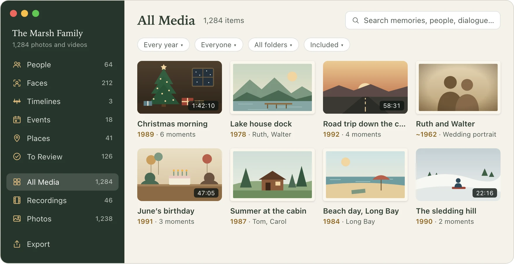
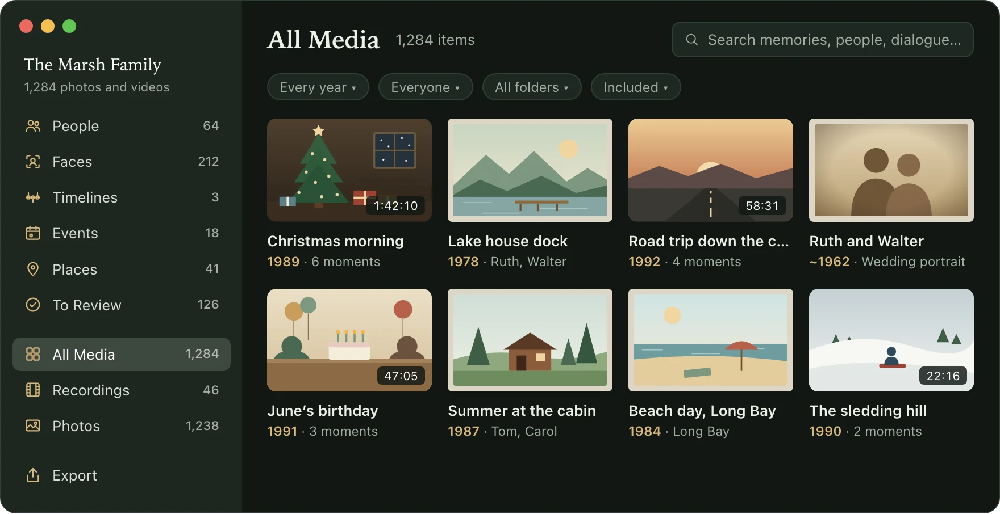
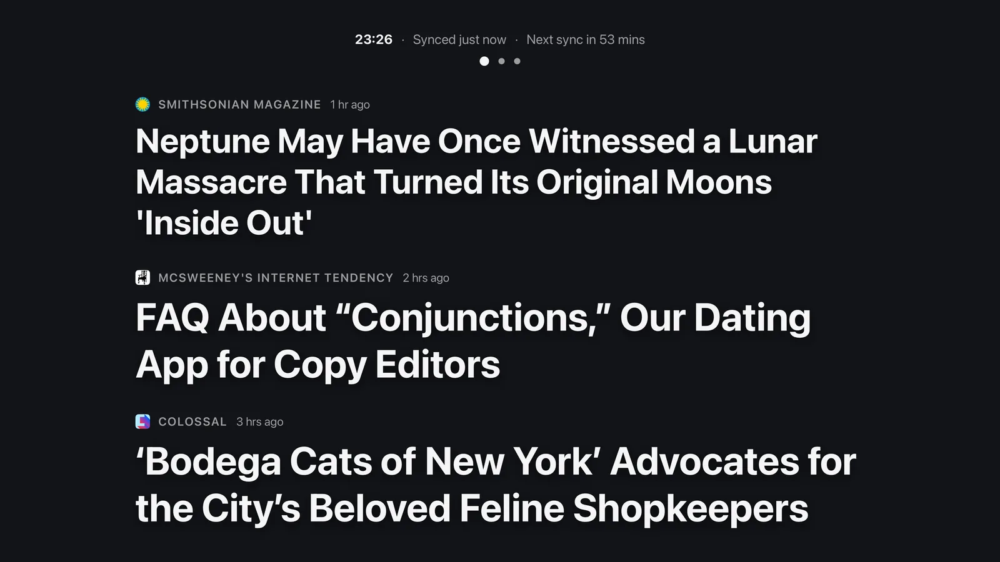
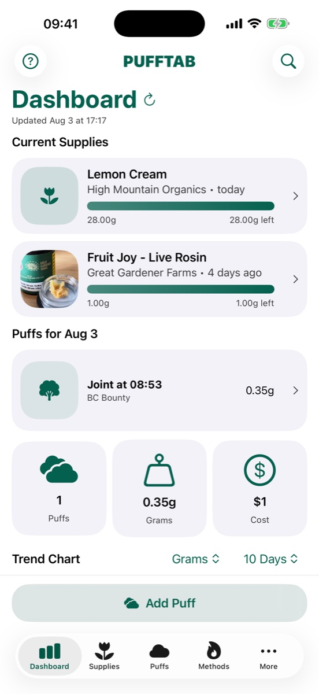
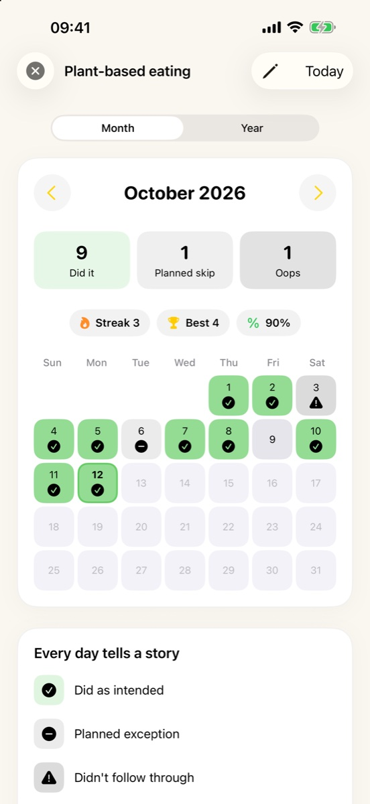

We make it work.
Then, we make
it work better.
iteration
/ˌɪtəˈreɪʃən/noun
- The act of repeating a process, learning from each pass.
- A successive version, refined from the one before.
Iterative projects
Family archive · Mac
AtticBox
Your family’s tapes and photos,
finally in order.
Digitized home movies come back as a folder of two-hour files named TAPE_07.MP4. AtticBox turns them, and your scanned photos, into a family archive: who’s in each one, when and where it happened, and every word that was said.
Mark the moments inside every tape, search the dialogue, find faces and build a family tree. It all happens on your Mac, and everything it makes opens without it.
Explore AtticBox

Reading · Apple TV
Marquee Reader
Your favourite corner of the web.
On the big screen.
Bring the sites you follow into your living room. Marquee Reader is an RSS reader made exclusively for Apple TV, with full-screen articles, a reading experience you can adjust, and an ambient screensaver that keeps your headlines in view.
Read at your own pace, try one-word-at-a-time speed reading, or manage your feeds from the iPhone companion. Your subscriptions sync through your own iCloud account.
Explore Marquee Reader
Learning · Web
PathCurator
Turn “I’ll read that later”
into somewhere to start.
A useful article. A great tutorial. A video that makes something click. PathCurator brings those bookmarks together into learning pathways, giving a collection of links a purpose and a direction.
Curate resources around a topic and put them in an order that makes sense. Build a route through what you want to learn, one useful resource at a time.
Explore PathCurator- 01DiscoverFind something worth learning.
- 02CollectBring the good resources together.
- 03ConnectGive your learning a path.
Personal tracking · iPhone & iPad
PuffTab
A clearer picture
of your cannabis use.
PuffTab is a personal cannabis journal that helps you keep track of what you use, what you have, and what you spend. Record puffs, supplies, methods and notes, then see your patterns in one place.
Set daily limits and Green Hours to suit your intentions. Log from your wrist or with Siri, and keep your records on your device with optional sync through your own iCloud account.
Explore PuffTab
Daily intentions · Apple devices
Intendfully
What you meant to do.
What actually happened.
Life has more than two states. Intendfully gives each intention a calendar where you can record that you followed through, made a planned exception, or had a day that went differently.
See the patterns build across months and years, with room for the choices and exceptions that make you human. Widgets and Siri shortcuts keep logging close at hand, while private iCloud sync keeps your devices together.
Explore Intendfully
“Perfection is achieved, not when there is nothing more to add, but when there is nothing left to take away.”